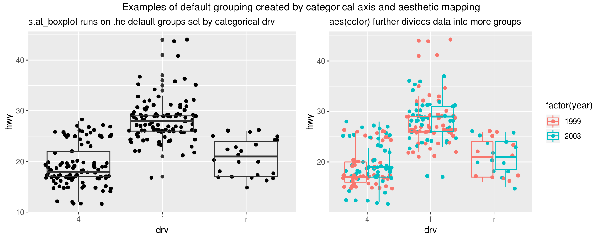
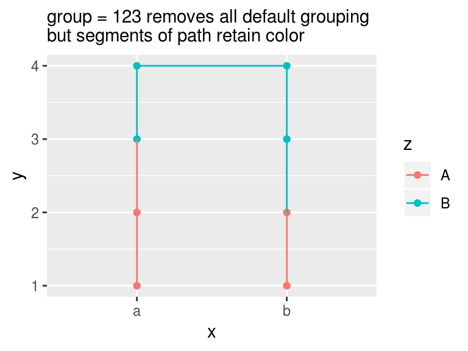
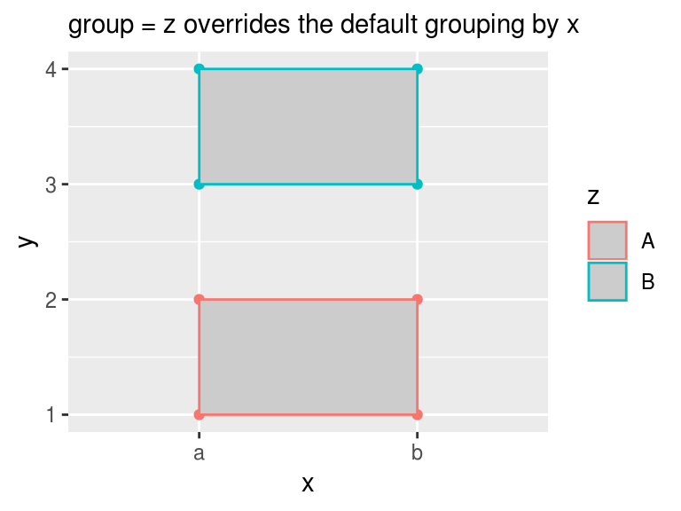

ggplot2: aes(group = ...) overrides default grouping
Default grouping in ggplot2
ggplot2 can subset all data into groups and give each group its own appearance or transformation. In many cases new users are not aware that default groups have been created, and are surprised to see the unwanted plot.
There are two ways in which groups are created implicitly:
- If
xoryare categorical variables, the rows of date with the same level form a group. Users often overlook this type of default grouping. - If aesthetic mapping, such as
color,shape, andfill, map to categorical variables, they subset the data into groups. All users know these mappings create groups as data are displayed in different colors or shapes as the names suggest. Many, however, do not know that the default grouping also apply to statistic transformation such as boxplot and smooth.
Let’s use boxplot to explain the default dgrouping. Boxplot displays summary statistics of a group of data. In the left figure, the x axis is the categorical drv, which split all data into three groups: 4, f, and r. Each group has its own boxplot. In the right figure, aesthetic mapping is included in ggplot(..., aes(..., color = factor(year)). It displays data points of different years with different colors as expected. It also further split each drv group into factor(year) subgroups. The boxplot now applies to all the subgroups, which may or may not be what you want.
library(ggplot2)
library(grid)
library(gridExtra)
g1 <- ggplot(mpg, aes(drv, hwy)) +
geom_jitter() +
stat_boxplot(fill = NA) +
labs(subtitle = "stat_boxplot runs on the default groups set by categorical drv")
g2 <- ggplot(mpg, aes(drv, hwy, color = factor(year))) +
geom_jitter() +
stat_boxplot(fill = NA) +
labs(subtitle = "aes(color) further divides data into more groups")
grid.arrange(g1, g2, nrow = 1,
top = textGrob("Examples of default grouping created by categorical axis and aesthetic mapping"))
What if you do not want the default grouping
The simplest solution to remove default grouping if it is caused by aesthetic mapping: do not include the mapping in the ggplot(aes()) as they are inherited by all layers.
In other cases we can break the default grouping with aes(group = ...). It overrides default grouping by explicitly setting the group. I will demonstrate how it works using the simple examples below.
We have the following data and we want connect the path of all data in x and y space. With the default grouping, the path, however, only connect within each group of x, as x is categorical.
# make up a simple dummy data frame
df <- data.frame(x = c("a", "a", "a", "a", "b", "b", "b", "b"),
y = c(1, 2, 3, 4, 4, 3, 2, 1),
z = c("A", "A", "B", "B", "B", "B", "A", "A"))
ggplot(df, aes(x, y)) +
geom_point() +
geom_path() +
labs(subtitle = "x set the default groups as it is categorical")
A constant group removes the default grouping. In the following code, the number 123 be any constant such as 1 or "abc", and group = 123 can be placed outside aes() as it is a constant. After removing the default grouping, geom_path() treat all rows as one groups so that there is only one path.
ggplot(df, aes(x, y)) +
geom_point() +
geom_path(aes(group = 123)) + # constant group can stay outside of aes()
labs(subtitle = "constant group removes categorical grouping in x")
Group is for collective geoms
To better understand the role of group, we need to know individual geoms and collective geoms. Geom stands for geometric object. Point plotted with geom_point() uses one row of data and is an individual geom. Bar plotted with geom_col() is also an individual geom. A polygon consists of multiple rows of data so it is a collcetive geom. A boxplot is also a collective geom as it is based on the statistic transformation of many rows of data. Individual geoms only depend on one row and do not need group. Collective geoms need to know groups before making plots.
Line and path plot use multiple rows, which qualify them as collective geoms. They, however, retain features of individual geom: each segments can have different style. This is different from polygon, of which all segments must of the same type.
Now let’s see how group acts on individual geoms and collective geoms.
We want to connect the path within z and label them in different colors, what should we do? The first thing jumps out may be aes(color = z), but it further breaks the data into four groups, which is not unexpected as we already know how grouping works.
ggplot(df, aes(x, y, color = z)) +
geom_point() +
geom_path() +
labs(subtitle = "x and color = z split data into 4 groups")
The correct way is to explicitly set the group with aes(group = z)
ggplot(df, aes(x, y, color = z)) +
geom_point() +
geom_path(aes(group = z)) +
labs(subtitle = "group = z overrides the default grouping by x")
What if we remove all default grouping with constant group? It does removes all default grouping for geom_path as all data points are connected with one path. It, however, preserves color of each segments.
ggplot(df, aes(x, y, color = z)) +
geom_point() +
geom_path(aes(group = 123)) +
labs(subtitle = "group = 123 removes all default grouping but segments of path retain color")
This will not happen to polygon, a pure collective geom. To draw polygons into groups based on z, we need to specify group = z for geom_polygon(). It overrides all default grouping and we get two distinct polygons.
ggplot(df, aes(x, y, color = z)) +
geom_point() +
geom_polygon(aes(group = z), fill = "grey80") +
labs(subtitle = "group = z overrides the default grouping by x")
Set group = 123 removes all the default grouping by both x and color = z. The new group is the one of all data. The color of the segments of the polygon only takes the color of z == "A" and ignores all other.
ggplot(df, aes(x, y, color = z)) +
geom_point() +
geom_polygon(aes(group = 123), fill = "grey80") +
labs(subtitle = "group = 123 removes all default grouping")